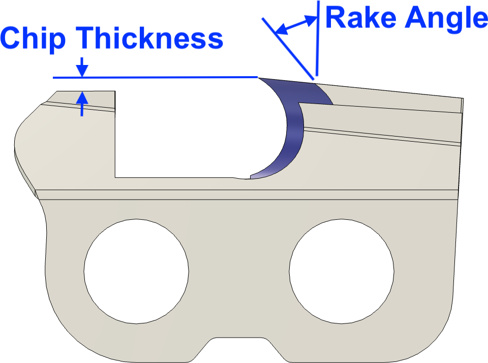
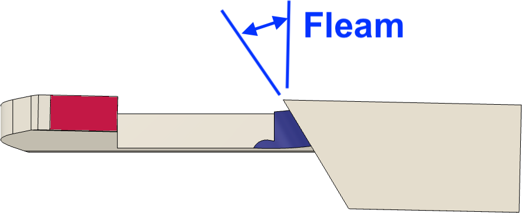
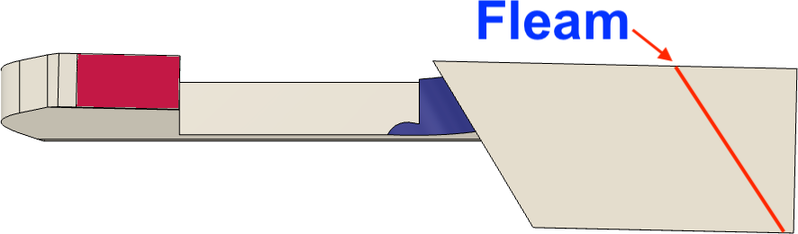
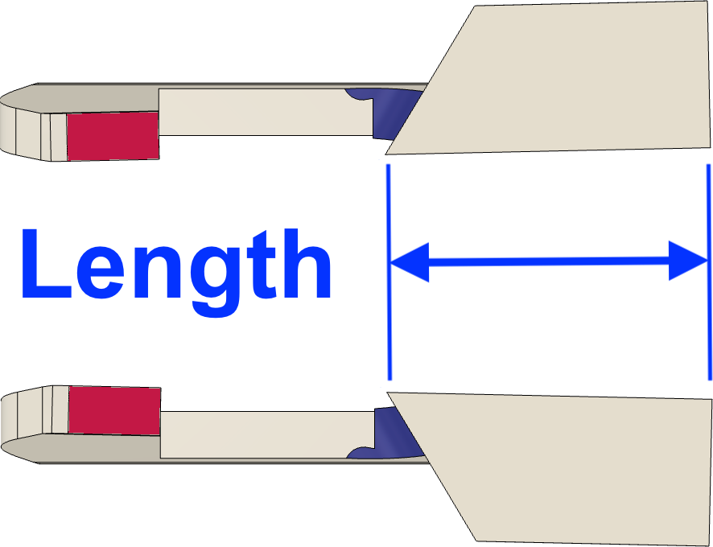
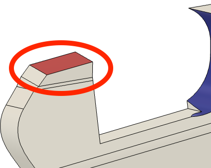
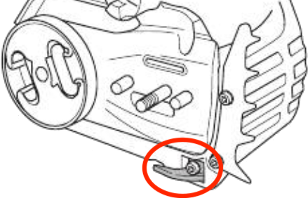
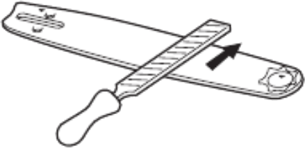
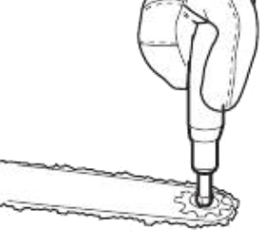

|
|
|
Saw Chains for Chainsaws |
|

Side view |
|

Top view |
Saw chain
When a chainsaw’s saw chain is sharpened using files, it is sharpened using a round file (sized for the chain). This is used to address the part marked in blue.
Oftentimes, a flat, mill file is also needed to reduce the size of the chip gauge (AKA, a “raker”). This is shown in the pictures marked in red.
I took a walk in the woods and came out taller than the trees.
Henry David Thoreau
|
General Guidelines |
||||||
|---|---|---|---|---|---|---|
|
Saw Chain Type |
Fleam |
Drop |
Rake |
Chip Thickness |
Comments |
|
|
Vise Rotate Angle |
Down Angle |
Head Tilt Angle |
Depth Gauge |
|||
|
Pitch < 0.404” |
Pitch = 0.404” |
|||||
|
Crosscut |
||||||

Round ground chisel tooth |
25° |
0° or 10° |
55° |
0.025”
|
0.030”
|

Fleam Angle Fleam / vise rotate angle is often indicated on the saw cutter as shown in the picture to the right. Match that angle. Drop / down angle is chain-dependent, but 10° is most common. Rake / head tilt angle typically ranges between 50° to 60°, but 55° is most common. |

Chisel tooth |
30° |
|||||

Semi-chisel tooth |
35° |
|||||
|
Rip |
10° |
10° |
50° |
0.025”
|
0.030”
|
|
This page is a bit long; you can use these links to jump to a specific section
Notes:
|
Step |
Comments | ||||||||||||
|---|---|---|---|---|---|---|---|---|---|---|---|---|---|
| 1 | Clean the saw chain |
If the chainsaw's saw chain has become gunked up, it can be immersed in a carburetor cleaning solution, and then scrubbed with a wire brush. Spray carburetor cleaner (in an aerosol can) can quickly remove any solvent remaining on the saw chain. Safety Note: It is recommended that you clean the saw chain before sharpening it. This is safer, and you are less likely to dull the blade by the cleaning activities. Also, it will be easier to see what you are doing during the sharpening activities. Finally, be sure to follow the safety guidelines for use and disposal of any cleaning chemicals. |
|||||||||||
| 2 |
Sharpen the Cutters |
The tops of some saw chain cutters have an line at an angle which is used to indicate the manufacturer's recommended Fleam / Vise Rotate Angle. This is shown as a red line in the picture to the right (click on the picture to see a bigger version). |
|||||||||||
| i |
Inspect the chain to find the cutter most in need for regrinding. |
When ground, the length on this cutter will set the amount ground from all the cutters. This ensures a consist chain which saws cleanly, neatly, and (hopefully) safely. Mark the top of this cutter with a red Sharpie (or use whichever colour you prefer). |
|||||||||||
| ii |
Sharpen all the left hand (or right hand) cutters. Start sharpening with the cutter marked red in the prior step. |
If sharpening the cutters by hand, a round file guide is recommended. If sharpening the cutters using a grinder,
|
|||||||||||
| iii |
Sharpen all the opposite hand cutters. Start sharpening with the cutter to the left of the one marked red. |

Cutter Length When grinding the cutters, it is important that the left and right cutters are equal length. It is a good practice to measure the cutters you just sharpened, and set the length of these cutters to be the same. Aim for a difference in lengths around ±0.01” (±0.25 mm). A micrometer is a good tool for measuring this. |
|||||||||||
| 3 |
Set the height for the Chip Gauges

Chip Gauge |
If the saw is generating fine (not chunky) sawdust, the chip gauge / raker will need to be filed down to increase the chip thickness. The chip gauge is the metal part of the saw chain which projects up in front of the cutter and sets the chip thickness. 
Depth Gauge Tool When filing down the chip gauge, be careful to not take off too much. If it is too short, the chainsaw will become too aggressive, and will also be dangerous to use. A depth gauge tool is really needed for setting the chip gauge's height correctly. If grinding the chip gauges using a grinder,
|
|||||||||||
| 4 |
Oil the saw chain. In a dusty environment, this can attract dust to the chain, so it may be better to only add a light coat of oil. |
||||||||||||
The file size needed, based on the chain used, should be as noted in the table below. It is best to consult your machine's manual though.
| Saw Chain Pitch | File Diameter | Grinding Wheel Diameter | Vendor Chain Part Numbers | |
|---|---|---|---|---|
|
1/4”
0.250” |
5/32”
4 mm |
1/8”
3.2 mm |
Carlton: E1MC EM: S00 Husqvarna: H00 Oregon: 25 |
SARP: 16 Stihl: 13, 13RM, 71 Windsor: 50K |
| 0.325” |
3/16”
4.8 mm |
1/8”
3.2 mm |
Carlton: K1C, K1L, K2C, K2L, K3C, K3L EM: S21, S27, S28 Husqvarna: H21, H22, H23, H25, H26, H27, H30, H78 Oregon: 20, 21, 22, 33, 34, 35, 80, 95, M21, M22 |
SARP: 520, 523, 528, 920, 923, 928 Stihl: 23, 25, 26 Windsor: 50JL, 50JLG, 58JL, 58JLG, 63JL, 63JLG |
|
3/8”
0.375” |
13/64”
5.2 mm |
1/8”
3.2 mm or 3/16”4.7 mm |
Carlton: A1EP, A1LM, A2EP, A2LM, A3EP, AA3LM, N1C, N4C EM: S36, S41, S44, S45, S46, S48, S49, S51, S52, S53, S54 Husqvarna: H42, H45, H46, H47, H48, H48S, H50, H51, H54, H80, H81, H82, H83, H475 |
Oregon: 72, 73, 75, 90, 91 SARP: 357, 357P, 357S, 980, 980D, 983, 983D, 988, 988D Stihl: 33, 35, 36, 61, 63 Windsor: 43RG, 50AG, 50APL, 50APLG, 50R, 50RG, 58AG, 58APLG, 63AG, 63APL, 63APLG |
| 0.404” |
7/32”
5.5 mm |
3/16”
4.7 mm |
Carlton: B2EP, B2LM, B3EP, B3H, B3HR, B3RM10, B3RM35, B3S, B5M EM: S64, S65, S66 Husqvarna: H57, H64, H65 |
Oregon: 16, 18, 19, 26, 27, 58, 59, 68 SARP: 463, 757, 757MK, 858, J63, MKII2000 Stihl: 40, 46 Windsor: 58B, 63B, 63BL, 63BR, HC, 2HC |

Husqvarna's file handle
This handle fits 4.0-4.5 mm round files and 6-8” flat files.
I prefer this handle style for sharpening saw chains over the wooden file handles.
Oregon Products makes a very useful field sharpening kit. (Though they don't seem to show it on their web site; I bought mine via Amazon.)
Such a kit needs to include:
|
|
The grinding wheels for the saw chain grinders are:
| Grinding Wheel | Comments |
|---|---|
| Pink | This is the grindstone traditionally supplied with new machines. |
| Green | General-purpose grindstone which balances speed of cutting with wheel wear. |
| Gray | Uses an abrasive material design to grind chains with hard coating materials applied to the cutter. This material creates a harder surface than a standard steel cutter. The gray wheel will grind much cooler and with less burning than the pink or green grindstones. However, it is softer and will not last as long. |
| CBN | Grinding wheels coated with CBN will cut without the heat buildup experienced by the traditional grindstones (any colour). They should be used on steel saw chains. |
| Diamond | Grinding wheels coated with diamonds will also cut without the heat buildup experienced by the traditional grindstones (any colour). They should be used on saw chains with teeth which are carbide. |
Do not forget to also maintain the chainsaw.
|

Chain Catcher |
|

Remove burrs |
|

Lube sprocket bearing |